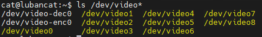
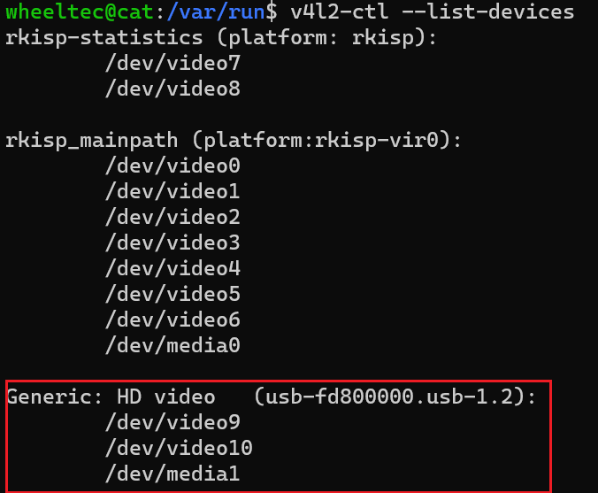

<!DOCTYPE lake>
<h1 data-lake-id="BP6Ab" data-lake-index-type="2" id="BP6Ab"><span data-lake-id="u45aa5e98" id="u45aa5e98">鲁班猫板卡添加camera</span></h1><p data-lake-id="u9d058e59" id="u9d058e59"><span class="lake-fontsize-12" data-lake-id="ub9050b5c" id="ub9050b5c" style="color: rgb(64, 64, 64); background-color: rgb(252, 252, 252)">连接摄像头连接到usb接口,查看dev设备:</span></p><span class="yuque-card-unsupported">[codeblock]</span><p data-lake-id="u53f49f10" id="u53f49f10"><span class="lake-fontsize-12" data-lake-id="u6096178d" id="u6096178d" style="color: rgb(64, 64, 64); background-color: rgb(252, 252, 252)">检查板卡上的camera设备资源示例</span></p><p data-lake-id="u99cc8b6c" id="u99cc8b6c"></p><p data-lake-id="u18c6e4ce" id="u18c6e4ce"><span data-lake-id="uee2aa6bb" id="uee2aa6bb">也可以使用v4l2命令查看</span></p><span class="yuque-card-unsupported">[codeblock]</span><blockquote data-lake-id="u8bc05e3b" id="u8bc05e3b"><p data-lake-id="u733facf1" id="u733facf1"><span class="lake-fontsize-12" data-lake-id="u18ad95bb" id="u18ad95bb">v4l2-ctl --list-devices是一个命令行工具命令，用于列出系统中可用的视频设备列表及其相关信息。它是V4L2（Video for Linux Two）的一部分，用于查看和管理视频设备。</span></p><p data-lake-id="u9338161f" id="u9338161f"><span data-lake-id="uc0d27846" id="uc0d27846">V4L2（Video for Linux Two）是Linux内核中的一个框架，用于支持视频设备的捕捉、显示和编解码等功能。它是Video4Linux的第二个版本。</span></p></blockquote><p data-lake-id="ub5c16565" id="ub5c16565"></p><blockquote data-lake-id="udecf0c13" id="udecf0c13"><p data-lake-id="u86a20356" id="u86a20356"><span data-lake-id="u7b8a3893" id="u7b8a3893">两个video:</span></p><p data-lake-id="ue31a15d4" id="ue31a15d4"><span data-lake-id="udfaf7e9c" id="udfaf7e9c" style="color: rgb(0, 0, 0)">一个是图像/视频采集，一个是metadata采集</span></p></blockquote><h1 data-lake-id="WMPMN" data-lake-index-type="2" id="WMPMN"><span data-lake-id="u31a8b55d" id="u31a8b55d" style="color: rgb(0, 0, 0)">相关工具库安装</span></h1><p data-lake-id="u3a993126" id="u3a993126"><span data-lake-id="u6267bf92" id="u6267bf92">安装opencv</span></p><span class="yuque-card-unsupported">[codeblock]</span><p data-lake-id="u5799917b" id="u5799917b"><span data-lake-id="u991c9fee" id="u991c9fee">验证是否安装成功</span></p><span class="yuque-card-unsupported">[codeblock]</span><h1 data-lake-id="J8i1X" data-lake-index-type="2" id="J8i1X"><span data-lake-id="u5a218054" id="u5a218054">摄像头拍照</span></h1><span class="yuque-card-unsupported">[codeblock]</span><p data-lake-id="u42d9d20c" id="u42d9d20c"><span data-lake-id="u60ace03f" id="u60ace03f">执行程序:</span></p><span class="yuque-card-unsupported">[codeblock]</span><blockquote data-lake-id="u78234dfe" id="u78234dfe"><p data-lake-id="u56c73d8d" id="u56c73d8d"><span data-lake-id="u338d8cbf" id="u338d8cbf">可以通过下面方法获取摄像头的video编号</span></p></blockquote><span class="yuque-card-unsupported">[codeblock]</span><h2 data-lake-id="ouf1c" data-lake-index-type="2" id="ouf1c"><span data-lake-id="ua4accd4a" id="ua4accd4a" style="color: rgb(64, 64, 64); background-color: rgb(252, 252, 252)">录制视频</span></h2><span class="yuque-card-unsupported">[codeblock]</span><p data-lake-id="u40b4369d" id="u40b4369d"><span data-lake-id="u8ec358f0" id="u8ec358f0">录制视频格式</span></p><table class="lake-table" data-lake-id="Z2SU6" id="Z2SU6" margin="true" style="width: 619px" width-mode="contain"><colgroup><col width="244"/><col width="375"/></colgroup><tbody><tr data-lake-id="u6ec0d4cd" id="u6ec0d4cd"><td data-lake-id="uda21cb15" id="uda21cb15"><p data-lake-id="ubeaf309d" id="ubeaf309d"><span data-lake-id="u0220d4b2" id="u0220d4b2">参数</span></p></td><td data-lake-id="uad3cd9a7" id="uad3cd9a7"><p data-lake-id="ua1c1ef66" id="ua1c1ef66"><span data-lake-id="u6e9230fd" id="u6e9230fd">解释</span></p></td></tr><tr data-lake-id="ubcdfcb12" id="ubcdfcb12"><td data-lake-id="ud17d17fd" id="ud17d17fd"><p data-lake-id="ud2cfa86d" id="ud2cfa86d" style="text-align: left"><span class="lake-fontsize-11" data-lake-id="ub168d417" id="ub168d417" style="color: rgb(79, 79, 79)">VideoWriter_fourcc('M','P','4','V')</span></p></td><td data-lake-id="u584195b4" id="u584195b4"><p data-lake-id="ueb4368ff" id="ueb4368ff"><span class="lake-fontsize-11" data-lake-id="u4af74201" id="u4af74201">MPEG-4编码 .mp4 可指定结果视频的大小</span></p></td></tr><tr data-lake-id="ueb12a102" id="ueb12a102"><td data-lake-id="u038f0265" id="u038f0265"><p data-lake-id="u3313fe10" id="u3313fe10"><span class="lake-fontsize-11" data-lake-id="ua5fd5eac" id="ua5fd5eac" style="color: rgb(79, 79, 79)">VideoWriter_fourcc('X','2','6','4')</span></p></td><td data-lake-id="ubf0e2ef2" id="ubf0e2ef2"><p data-lake-id="u4bb6af48" id="u4bb6af48"><span class="lake-fontsize-11" data-lake-id="uae74b2a8" id="uae74b2a8">MPEG-4编码 .mp4 可指定结果视频的大小</span></p></td></tr><tr data-lake-id="u36575606" id="u36575606"><td data-lake-id="ua415cf2b" id="ua415cf2b"><p data-lake-id="uc9ee11fe" id="uc9ee11fe"><span class="lake-fontsize-11" data-lake-id="ufc45ba94" id="ufc45ba94">VideoWriter_fourcc('I', '4', '2', '0')</span></p></td><td data-lake-id="u06a32acb" id="u06a32acb"><p data-lake-id="uf6fbe65e" id="uf6fbe65e"><span class="lake-fontsize-11" data-lake-id="u1f4b32d0" id="u1f4b32d0">该参数是YUV编码类型，文件名后缀为.avi 广泛兼容，``但会产生大文件</span></p></td></tr><tr data-lake-id="u769fa0b0" id="u769fa0b0"><td data-lake-id="u32717394" id="u32717394"><p data-lake-id="u4b4c615b" id="u4b4c615b"><span class="lake-fontsize-11" data-lake-id="udde4c8bb" id="udde4c8bb">VideoWriter_fourcc('P', 'I', 'M', 'I')</span></p></td><td data-lake-id="u4cdca7d4" id="u4cdca7d4"><p data-lake-id="u26945dc8" id="u26945dc8"><span class="lake-fontsize-11" data-lake-id="u2114b6d4" id="u2114b6d4">该参数是MPEG-1编码类型，文件名后缀为.avi</span></p></td></tr><tr data-lake-id="u7e04674c" id="u7e04674c"><td data-lake-id="u747b8f18" id="u747b8f18"><p data-lake-id="u40e5f1ca" id="u40e5f1ca"><span class="lake-fontsize-11" data-lake-id="u7a506517" id="u7a506517">VideoWriter_fourcc('X', 'V', 'I', 'D')</span></p></td><td data-lake-id="ue2e72da3" id="ue2e72da3"><p data-lake-id="u001272b7" id="u001272b7"><span class="lake-fontsize-11" data-lake-id="u78565311" id="u78565311">该参数是MPEG-4编码类型，文件名后缀为.avi，``可指定结果视频的大小</span></p></td></tr><tr data-lake-id="u90b57787" id="u90b57787"><td data-lake-id="u912531f0" id="u912531f0"><p data-lake-id="uc168a100" id="uc168a100"><span class="lake-fontsize-11" data-lake-id="u04ac1e07" id="u04ac1e07">VideoWriter_fourcc('T', 'H', 'E', 'O')</span></p></td><td data-lake-id="u27116532" id="u27116532"><p data-lake-id="u9b877886" id="u9b877886"><span class="lake-fontsize-11" data-lake-id="uc5f14f71" id="uc5f14f71">该参数是</span><span class="lake-fontsize-11" data-lake-id="ud8723d4a" id="ud8723d4a">Ogg</span><span class="lake-fontsize-11" data-lake-id="u89263bfa" id="u89263bfa"> Vorbis,文件名后缀为.ogv</span></p></td></tr><tr data-lake-id="u0c3094cf" id="u0c3094cf"><td data-lake-id="uda4e90cd" id="uda4e90cd"><p data-lake-id="u0a5889f4" id="u0a5889f4"><span class="lake-fontsize-11" data-lake-id="u30572de4" id="u30572de4">VideoWriter_fourcc('F', 'L', 'V', '1')</span></p></td><td data-lake-id="u001eff41" id="u001eff41"><p data-lake-id="u701932f0" id="u701932f0"><span class="lake-fontsize-11" data-lake-id="u8ea49ce6" id="u8ea49ce6">该参数是Flash视频，文件名后缀为.flv</span></p></td></tr></tbody></table>